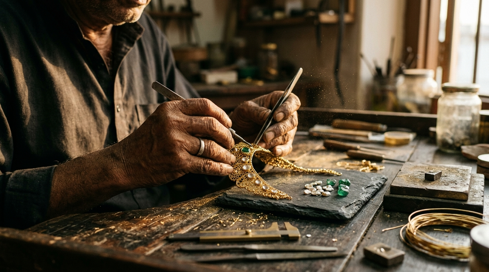

01
Handcrafted Excellence
Each frame, link, and filigree scroll is forged, annealed, and soldered individually at the bench without automated assembly-line molds.
Born in the historic goldsmithing quarters of Lahore and refined in our Islamabad studio, Zaverat crafts heirloom jewellery by hand — uniting centuries-old South Asian artistry with quiet, contemporary poise.


Zaverat began as a quiet promise between families of master karigars from Lahore’s Walled City and Multan’s silver ateliers: to preserve traditional South Asian jewellery craft before industrial casting could erase the mark of the human hand.
Across generations, our artisans inherited the disciplined rhythms of hand-forged kundan foil setting, twisted silver tarkashi filigree, and northern valley stonework. Rather than leaving these techniques locked in bridal vaults, Zaverat reimagines them through contemporary proportions — lighter silhouettes, balanced clasps, and refined textures meant for modern life.
To us, jewellery is never mere ornament. It is an intimate archive of blessings, milestones, and inherited memory — a piece worn close to the pulse today and passed forward tomorrow.
“True luxury lives in patience: in a bezel folded by hand, a pearl balanced to move with grace, and an heirloom shaped to outlast every fleeting season.”— The Zaverat Atelier Manifesto
Every Zaverat creation passes through dedicated studio hands over days of deliberate bench work, honouring traditional technique from raw ingot to final polish.
Each frame, link, and filigree scroll is forged, annealed, and soldered individually at the bench without automated assembly-line molds.
From concealed underside engraving to feather-light earring balance, every millimetre is checked under a jeweller’s loupe for enduring comfort.
We work with hallmarked 925 sterling silver, 18k gold vermeil, reclaimed brass, freshwater pearls, and ethically sourced northern valley stones.
Rooted in historic South Asian geometry yet pared back with editorial restraint, every silhouette transitions effortlessly from celebration to everyday wear.
Our studio brings together master craftspeople whose lifelong discipline transforms precious metals and natural stones into living heirlooms.
Every Zaverat heirloom unfolds across four measured chapters — from archival study to the moment a finished jewel rests in your hands.
Motifs drawn from Mughal sandstone jali lattices, historic royal treasuries, and the flora of Pakistan’s northern valleys anchor each collection in cultural memory.
Ideas are translated into scaled hand sketches, stone-pairing studies, and ergonomic wax models to ensure graceful drape and weight distribution.
Master karigars hand-hammer frames, twist silver filigree, and burnish pure-gold kundan bezels around individually selected gemstones.
Each piece receives a satin hand-polish, hallmark purity inspection, and studio signature before entering its linen-lined keepsake box.
Four foundational principles guide every material we source, every artisan partnership we honour, and every piece that leaves our bench.
Every piece is crafted in small batches by fairly compensated master artisans, preserving the unmistakable warmth and integrity of hand-built metalwork.
We celebrate regional Pakistani goldsmithing and silver filigree traditions, crediting each artisan’s lineage and keeping endangered skills alive.
Balanced proportions, smooth skin-facing backs, and versatile clasps ensure historic motifs feel effortless for contemporary celebrations and daily ritual alike.
Backed by hallmarked metals, secure stone settings, and lifetime studio care and re-plating services, every Zaverat piece is built to endure for decades.
Explore our curated collection of hand-forged necklaces, jhumkas, and rings, or speak directly with our Islamabad studio team for bespoke commissions and bridal consultations.